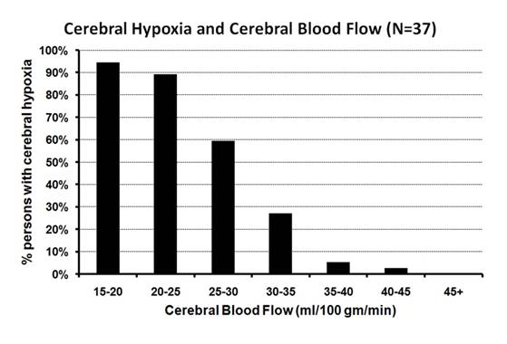
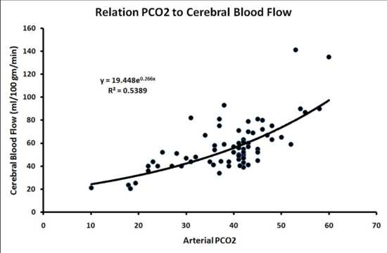
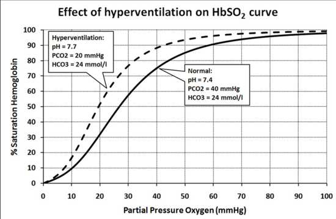
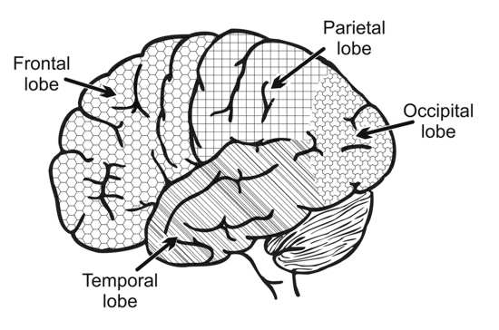

An incident occurring during the first few weeks I started my career in anesthesia made a deep impression upon me.
It was the beginning of 1977, and I had just started an anesthesiology residency in the Fremantle Hospital in Western Australia. Everything was new and unfamiliar. I asked the anesthesiologist standing next to me, why the patient who was undergoing an operation under general anesthesia was sweating so profusely. His reaction surprised me, and was one I never forgot. He grabbed the anesthetic chart, began fanning the patient and himself, and remarked: “Warm isn’t it?”
It was not warm in the operating theater. The patient was simply inadequately anesthetized using the then popular Liverpool technique of anesthesia. The Liverpool technique of anesthesia was first described by Thomas Cecil Gray during 1952. It consists of the now standard method of using separate drugs to provide analgesia, muscle relaxation, and unconsciousness, while mechanically ventilating the patients with a respirator to prevent hypoxia (Gray 1952). Subsequent studies revealed that anesthetic drug dosages could be further reduced by mechanically hyperventilating patients under general anesthesia (Dundee 1952, McAleavy 1961). This latter effect is but one of the several fascinating effects of hyperventilation on the human body. In fact, hyperventilation exerts so many effects upon the body relevant to anesthesia and the functioning of the brain, that it deserves a separate discussion. So what is hyperventilation? But first, what is the role of carbon dioxide in the body?
Carbon dioxide is a byproduct of the energy-generating chemical reactions occurring within the cells of the body. Carbon dioxide produced by these chemical reactions within the cells of the body diffuses into blood which transports it into the lungs where it is eliminated from the body in exhaled air. But carbon dioxide is not just an inert waste product. It is also a vital component in the maintenance of the chemical environment of the body, because it also regulates the acidity of blood, as well as other fluids outside and inside each cell of the body.
Regulation of acidity and alkalinity within the tissues of the body is extremely important. The machinery of the body is driven by myriad complex chemical reactions, and the sum total of these chemical reactions result in optimally healthy body function at a certain levels of acidity and alkalinity inside and outside the cells of the body. Acidity and alkalinity of fluids is expressed in terms of the “pH”, a scale varying from 0 to 14. A pH = 0 is maximally acid, a pH = 7 designates neutrality, being neither acid nor alkaline, while a pH =14 is maximally alkaline. A fluid is acid if the pH is less than 7, and is alkaline if the pH is greater than 7. Blood is slightly alkaline with a pH = 7.4, while the insides of cells are slightly acid with a pH = 6.9.
Carbon dioxide (CO2) reacts reversibly with water (H2O) to form carbonic acid (H2CO3). But carbonic acid is unstable at body temperature and is usually in the ionized state, forming hydrogen ion (H+), and bicarbonate ion (HCO3-) as in the chemical equation below.
CO2 + H2CO3 ⇔ H+ + HCO3-
At any given partial pressure of carbon dioxide within the tissues of the body, a balance exists between carbon dioxide and the bicarbonate concentration. This balance between carbon dioxide and bicarbonate ion determines the pH in blood and other tissues of the body. The Henderson-Hasselbach equation used to calculate the pH in blood shows this relationship in mathematical form.
pH = 6.1 + log[HCO3-] ÷ (0.03 × PCO2)
The normal partial pressure of carbon dioxide in arterial blood is about 40 mmHg, and the normal bicarbonate concentration is about 24 millimoles per liter. Put these figures into the Henderson-Hasselbach equation above, and you get the pH of arterial blood which is 7.4.
One more fact is needed to fully understand the effects of hyperventilation. This is the amount of bicarbonate in the body. As mentioned above, the concentration of bicarbonate in blood is 24 millimoles per liter. This is also true for all the fluids in between the cells of the body. Inside the cells of most tissues, the bicarbonate concentration is about 8 millimoles per liter. This means there is a lot of bicarbonate in the body. It takes time before such a large mass of bicarbonate ion decreases, or increases in size as a result of changes in blood carbon dioxide concentration. And it is this large mass of bicarbonate that lies at the origin of the effects of hyperventilation. So what is hyperventilation?
In practical terms, all carbon dioxide is eliminated from the body as a gas in exhaled air. When the volumes of air breathed into and out of the lungs increases above what is normal, more carbon dioxide than normal is eliminated from the body. This lowers the pressure of carbon dioxide within the body, whereby carbonic acid changes back to into water and carbon dioxide, eventually resulting in a new equilibrium between bicarbonate ion and carbon dioxide.
CO2 + H2O ← H2CO3 ← H+ + HCO3-
But this spontaneous chemical reaction whereby carbonic acid returns to water and carbon dioxide, is not as rapid as the speed with which carbon dioxide is removed from the body by hyperventilation. So when body carbon dioxide pressure is suddenly lowered relative to the bicarbonate concentration, the pH increases above normal because the bicarbonate concentration does not decrease as rapidly. The condition where pH of the body is increased above normal is called “alkalosis”, and all the body fluids and cells become more alkaline than normal. This effect lies at the basis of the mental effects of hyperventilation. So what are the mental effects of hyperventilation?
During the last two years of World War 2 (1939-1945), Seymour Kety and Carl Schmidt performed hyperventilation experiments upon conscientious objectors (Kety 1946). Military applications were part of the reason for these experiments. Their reasoning was that sometimes airplane crew flying at great height above Germany, might sometimes depend upon hyperventilation to prolong the period of useful consciousness, such as when oxygen delivery systems failed at high altitude, or when forced to abandon high flying aircraft after being hit by enemy fire. Regardless of these considerations, these experiments provided invaluable information regarding the manifestations of sudden onset of hyperventilation in normal young people, as well as the levels of carbon dioxide at which these manifestations occur. Kety and Schmidt found that clouding of consciousness and unconsciousness became increasingly likely when the carbon dioxide pressure fell below 30 mmHg (Kety 1946). This threshold was subsequently confirmed by Rafferty in 1992, who also found that all people developed neurological symptoms due to hyperventilation at a carbon dioxide pressure of 20 mmHg (Rafferty 1992).
Mental effects of hyperventilation are very mixed. People with hyperventilation commonly describe symptoms such as disturbed mentation, impaired concentration, poor memory, and hallucinations. Feelings of depersonalization are also common, where hyperventilating persons describe sensations of unreality, or feeling everything is confused and dream-like. Visual experiences such as blurred vision, tunnel vision, flashing lights, and seeing double also occur (Evans 2005, Lum 1987, Perkin 1986). Extreme hyperventilation causes loss of consciousness in 31% of people with hyperventilation disorder (Perkin 1986), is occasionally observed during experimental hyperventilation (Kety 1946), and in some pregnant women hyperventilating due to labor pains (Burden 1994). But this is not all. Hyperventilation can sometimes even cause brain death.
The flow of blood through the brain is called the “cerebral blood flow”. The normal flow of blood through the adult human brain is about 50 milliliters blood per 100 gm brain tissue per minute (50 ml/100 gm/min). During 1954, a medical scientist called Frank Finnerty determined the levels of cerebral blood flow at which cerebral hypoxia occurs in conscious people (Finnerty 1954). This experiment was performed according to the ethical standards of the day, using measurement techniques that are still the “golden standards” for the measurements he performed. Nowadays, most medical ethical committees would refuse permission to perform this experiment, so this was one of those enormously valuable, but unrepeatable experiments providing invaluable information about a fundamental property of the functioning of the human brain. The experiment was basically simple. He used a drug to lower the blood pressure of the experimental persons until symptoms of cerebral hypoxia occurred. Manifestations of cerebral hypoxia were defined as “sighing, yawning, staring, and confusion.” He found that the average level of cerebral blood flow at which cerebral hypoxia began to manifest was 31.5 ml/100 gm/min (Finnerty 1954). But this figure is an average, which means one half of all people developed manifestations of cerebral hypoxia at higher levels of cerebral blood flow, the other half at lower levels. So when you look at a graph of the distribution of levels of cerebral blood flow at which cerebral hypoxia occurred in this experiment, you see that significant numbers of people developed manifestations of cerebral hypoxia at cerebral blood flow at levels of even 40 ml/100 gm/min. The reverse is also true. About 10% of people are still conscious without any cerebral hypoxic symptoms at blood flow levels of 20-25 ml/100 gm/min, and about 5% are still conscious without any cerebral hypoxic symptoms at blood flow levels as low as 15-20 ml/100 gm/min (see Figure 5).

Figure 5: Percentage distribution of cerebral blood flows at which symptoms of cerebral hypoxia without loss of consciousness occur in people of all age groups. Symptoms of cerebral hypoxia occur at an average cerebral blood flow of 31.5 ml/100 gm/min. The distribution of measurements around this average reveals that somewhat more than 10% of people are still conscious without any cerebral hypoxic symptoms at blood flow levels of 20-25 ml/100 gm/min, and about 5% are still conscious without any cerebral hypoxic symptoms at blood flow levels as low as 15-20 ml/100 gm/min (Finnerty 1954) (Figure � Woerlee).
Human studies performed since the 1940's reveal that hyperventilation reduces the cerebral blood flow by causing constriction [narrowing] of the arteries supplying the brain with blood (Pierce 1962, Raichle 1972, Wollman 1965, Wollman 1968a). Seymour Kety devised the first accurate system for measuring the cerebral blood flow which is still the “golden standard” against which other techniques for measuring cerebral blood flow are compared. His articles are still as current and valuable as when they were published during the 1940's. He found that cerebral blood flow is directly related to the carbon dioxide pressure in the blood, and inversely related to the pH of the blood flowing through the arteries going to the brain (Kety 1946, Kety 1948). In other words, the lower the carbon dioxide pressure in the blood, the lower the cerebral blood flow. The studies of Kety clearly demonstrated that when hyperventilation caused the arterial carbon dioxide to drop below 30 mmHg, that the cerebral blood flow dropped below 40 ml/100 gm/min (Kety 1946), a cerebral blood flow threshold below which increasing numbers of people develop manifestations of cerebral hypoxia (Figure 6). And as mentioned earlier, all people develop neurological manifestations due to hyperventilation below an arterial carbon dioxide pressure of 20 mmHg (Rafferty 1992, and Figure 6).

Figure 6: The effect of hyperventilation on the cerebral blood flow. The relationship between the carbon dioxide pressure in arterial blood and the cerebral blood flow in humans is as shown in this graph (Kety 1946, Kety 1948, Wollman 1965, Wollman 1968a). Extreme levels of hyperventilation, where the carbon dioxide pressure drops below 25-30 mmHg cause the cerebral blood flow to drop below 40 ml/100 gm/min, a level below which increasingly more people develop manifestations of cerebral hypoxia (Finnerty 1954) (Figure � Woerlee).
Such low levels of arterial carbon dioxide pressure also cause cerebral blood flow to drop to levels at which cerebral hypoxia occurs (Figure 5). But are the cerebral manifestations of hyperventilation due to cerebral hypoxia? Binding of oxygen with hemoglobin provides further evidence that hyperventilation may well cause brain tissue hypoxia.
Blood is not a wondrous fluid with magical properties. Instead blood is a transport fluid. It transports oxygen, electrolytes, proteins, hormones, fats and sugars to tissues, and removes waste products of metabolism, hormones, products of metabolisms, etc away from tissues. Oxygen is transported by blood from the lungs where it enters the body. However oxygen is very poorly soluble in blood, and blood contains negligible amounts of dissolved oxygen. Practically all oxygen in blood is chemically bound to hemoglobin inside red blood cells. But the chemical binding of oxygen with hemoglobin is directly affected by the acidity and alkalinity of blood (i.e. the pH of blood).
Hyperventilation causes loss of carbon dioxide from the body, causing the pH of blood to increase and become more alkaline. When blood is more alkaline, hemoglobin binds more tightly with oxygen. Oxygen bound to hemoglobin within red blood cells does nothing, because binding of oxygen to hemoglobin within red blood cells is no more than the body's method of transporting oxygen to the capillaries within the tissues of the body. Within the capillaries of the tissues of the body, the chemical bond between oxygen and hemoglobin is weak enough to allow oxygen to leave the blood and diffuse into the cells surrounding the capillaries, so providing oxygen for the vital, energy-generating chemical processes within the cells forming the tissues of the body. But when hyperventilation causes oxygen to bind more tightly to hemoglobin, less oxygen is released to diffuse into the tissues surrounding the capillaries. The oxyhemoglobin saturation curve demonstrates this effect, showing that hemoglobin binds oxygen more tightly during hyperventilation (Figure 7). This is why hyperventilation can cause less oxygen to enter the tissues of the body from the capillaries, so resulting in hypoxia of the cells outside the blood vessels, even though the blood contains more than sufficient oxygen.

Figure 7: Oxyhemoglobin saturation curve showing how the binding of hemoglobin with oxygen changes during hyperventilation. For example, if the oxygen pressure is 40 mmHg, the pH and everything else is normal, then hemoglobin is about 75% saturated. But during extreme hyperventilation when the PCO2 = 20 mmHg, the chemical binding of hemoglobin with oxygen is much stronger, and hemoglobin is almost 90% saturated at an oxygen pressure of 40 mmHg.
(Figure � Woerlee).
But does hyperventilation cause cerebral hypoxia? Hyperventilation has profound effects on the transport and delivery of oxygen to the tissues of the body. Hyperventilation reduces the cerebral blood flow, and to make matters worse, hyperventilation also causes oxygen to bind more tightly with hemoglobin. Both factors combine to reduce the availability of oxygen to the tissues of the brain, and can even cause cerebral hypoxia. Animal studies reveal that extreme hyperventilation does indeed cause cerebral hypoxia (Clausen 2004, Sugioka 1960). The tragic fatal effects of relative hyperventilation in humans with severe chronic obstructive airway disease, also reveals that hyperventilation in humans can result in cerebral hypoxia severe enough to cause actual brain damage and brain death (Kilburn 1966, Rotheram 1964). Furthermore, hyperventilation has also been implicated as one of the potential causes of postoperative cognitive dysfunction.
This last remark brings us to the effects of hyperventilation on conscious mental function. These were discussed earlier in this chapter and consist of manifestations such as: disturbed mentation, impaired concentration, poor memory, and hallucinations. Feelings of depersonalization are also common, as hyperventilating persons often describe sensations of unreality, or feeling everything is confused and dream-like. Many of these conscious mental experiences and manifestations are similar to those of cerebral hypoxia (see Chapter 4). And during extreme degrees of hyperventilation, the degree of cerebral hypoxia may be sufficient to cause loss of consciousness. But is this true for lesser degrees of hyperventilation?

Figure 8: The basic regions / lobes of the surface, (or cortex) of the brain. (Figure � Woerlee).
The effects of hyperventilation upon the human brain have been studied intensively for many years. As long ago as the 1940's, hyperventilation was known to cause high amplitude, low frequency delta waves [waves with a frequency of 1-4 Hertz] to manifest in the electroencephalograph of the frontal lobes of the brains of conscious persons (Davis 1942, Meyer 1960, Stoddart 1967, Worp 1991). However, the appearance of delta waves is unrelated to the degree of lowering of arterial carbon dioxide pressure, or the pH increase due to hyperventilation, but is directly related to the occurrence of cerebral hypoxia induced by hyperventilation (Gotoh 1965). Hyperventilation does not only reduce the total cerebral blood flow, but also changes the distribution of blood flow within the brain. Modern studies reveal that blood flow to the frontal, occipital, and parieto-occipital cortex (see Figure 8), as well as the hippocampus is reduced relative to other areas of the brain within seconds to minutes of commencing hyperventilation (Naganawa 2002, Posse 1997).
These relative changes in blood flow and electroencephalogram reflect reduced activity in these regions of the brain. The frontal lobes of the brain are required for cognitive functions such as memory, experience of time, directed attention, reflective consciousness, and the idea of self (Dietrich 2003). So hyperventilation induced cognitive changes such as disturbed mentation, impaired concentration, and poor memory, are readily explained by reduced frontal cortical function - nicely termed “transient hypofrontality” (Dietrich 2003). The occipital cortex performs primary and secondary visual processing, while the parieto-occipital cortex integrates body sensory information into the body image (Blanke 2005, Maravita 2003). Reduced function in these regions of the brain certainly explains other experiences occurring during hyperventilation, such as visual hallucinations, feelings of depersonalization, or feeling that everything is confused and dream-like.
All these things mean hyperventilation can temporarily induce profound changes in brain function and the resulting conscious mental function. These effects even form the basis for a particular form of psychotherapy during which patients perform prolonged hyperventilation - a therapy called “Holotropic Breathwork” (Rhinwine 2007). As a simple and blunt anesthesiologist, I am unable to make any serious assessment of this form of psychotherapy, but this use of the conscious mental effects of hyperventilation is certainly interesting.
Most swimmers know that a short period of hyperventilation prior to diving allows them to extend the period they can spend underwater. But this not a safe technique, because sometimes people who hyperventilate prior to diving lose consciousness and drown while underwater (Craig 1976). Part of the reason why this technique works is the fact that breathing is mainly regulated by the pressure of carbon dioxide in the blood. Increased carbon dioxide pressures in arterial blood stimulates breathing, and generates a desire to breathe. Decreased carbon dioxide pressure in blood causes breathing to slow, reducing the urge to breathe, sometimes entirely removing the urge to breathe (Meah 1994). Arterial blood oxygen pressures measured in divers forced to surface due to the necessity to take a breath after prolonged dives preceded by hyperventilation, are sometimes low enough to cause loss of motor control (Lindholm 2006), and sometimes even low enough to cause loss of consciousness in some people (Craig 1961, Lindholm 2006).
Loss of consciousness due to hypoxia is insidious, and is preceded by changes in mental state whereby affected people experience loss of insight, together with feelings of wellbeing (page 300 in Liere 1963). This explains why many people do not even realize they are about to lose consciousness due to hypoxia. This is the reason why some people who hyperventilate prior to an underwater dive, sometimes lose consciousness due to cerebral hypoxia before feeling the necessity to surface and breathe. And once they lose consciousness while underwater, they subsequently drown if not rescued (Craig 1976). However, anesthesiologists regard hyperventilation as a useful technique.
Anesthesiologists often exploit the various properties of hyperventilation during general anesthesia. For example:
This last point is fascinating. How can hyperventilation intensify and prolong the actions of anesthetic drugs? The answer lies in the chemical nature of anesthetic drugs. Most drugs and most organic compounds are either weak acids or weak bases. Anesthetic drugs are no different. In fact, except for thiopental, all anesthetic drugs are bases. Now a base interacts with water molecules to form an equilibrium between an ionized form and a non-ionized form. Just look at this chemical equilibrium where “H2O” is water, and “B” is the base molecule or drug. When such a weak base dissolves in water, it interacts with water to acquire a hydrogen ion (H+), resulting in a free negatively charged hydroxyl ion (OH
B + H2O ⇔ BH+ + OH-
For example, morphine is just such a weak base, so the interaction with water is just the same, and forms an equilibrium as below where the proportions ionized and unionized morphine are constant at each pH level.
Morphine + H2O ⇔ MorphineH+ + OH-
Morphine is a weak base. So when blood becomes more acid, (i.e. the pH decreases), a greater proportion of morphine exists in the ionized form. On the other hand, when blood becomes more alkaline and the pH increases, a smaller proportion of morphine exists in the ionized form. The same is true for all other anesthetic drugs except for thiopental. This may sound like a chemical subtlety of little practical consequence, but the concept of ionization of drugs used in anesthesia has important practical consequences.
Anesthetic drugs do not cause sleep by acting upon blood cells or blood vessels: anesthetic drugs do not cause muscle paralysis by acting on blood cells or blood vessels: and anesthetic drugs do not relieve pain by acting upon blood cells or blood vessels. Instead, anesthetic drugs cause all these effects by acting upon nerve cells which are located outside and around blood vessels. And anesthetic drugs must somehow diffuse out of the blood vessels transporting them to get to the nerve cells outside. Brain capillaries only permit the passage of non-ionized drug molecules into the substance of the brain, and many anesthesiologists exploit this latter fact to prolong the effects of general anesthesia under some circumstances.
One of these circumstances is the period near the end of an operation. At the end of an operation, a patient must be quickly aroused and transported out of the operating theater to the recovery room, so that the next patient can be brought into the operating theater to undergo an operation. So towards the end of an operation, anesthesiologists always try to lower the concentrations of drugs used for general anesthesia so that the patients will awaken more rapidly. They use measurements as well as clinical experience to estimate whether their patients will remain under general anesthesia sufficiently long for the surgeon to finish before they awaken. This is where anesthesia becomes an art form akin to cooking or music. Unfortunately some patients begin to react to the pain of surgery at this time. This leaves the anesthesiologist with three choices of action:
Hyperventilation, not only reduces the level of consciousness, but also increases the proportion of non-ionized opiates already present in blood. This means more of these opiates can enter the brain, resulting in higher brain concentrations of opiates such as morphine (Nishitateno 1979), sufentanil (Matteo 1992), and fentanyl (Ainslie 1979). The same effect is also true for all other anesthetic drugs, except for thiopental. This relative increase in non-ionized concentrations of weakly basic drugs is one of the reasons why hyperventilation potentiates the effects of most anesthetic drugs.
This brief discussion of the properties and consequences of hyperventilation reveal it to be almost “magical” in the extent of the extensive changes it induces in body and mental function. And the most magical aspect of hyperventilation, is how something as simple as breathing deeply and quickly, can induce such profound effects upon the functioning of the body, as well as the functioning of the conscious mind. Hyperventilation is still applied during some types of surgery performed under general anesthesia, but when injudiciously applied is detrimental, yet when applied appropiately is a useful addition to the anesthesiological amamentarium.